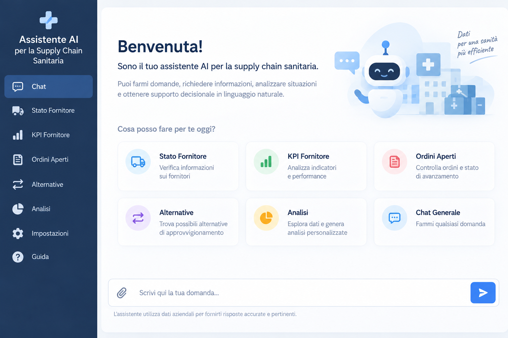

Project Overview
This portfolio page describes the high-level architecture of an implemented AI assistant combining local language-model inference, retrieval-augmented generation, structured database access, semantic search, and operational analytics.

The illustration is a recreated conceptual interface for public presentation, not a production screenshot.
Technology Stack
PythonStreamlitSQLiteChromaDBRAGLM StudioQwen2.5-Coder-3BMLX
Architecture at a Glance
Natural-language requests are routed to structured retrieval, semantic retrieval, or specialized analytical processing. Relevant context is then used by a locally served language model to support conversational responses.
Repository Scope & Confidentiality
This is a public technical portfolio overview only. Production source code, datasets, databases, internal prompts, operational rules, and production screenshots are not published.
Author
Neda Jamshidi
PhD Researcher in Artificial Intelligence & Natural Language Processing
University of Siena, Italy